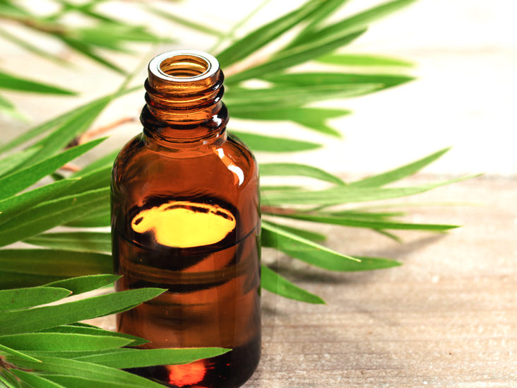
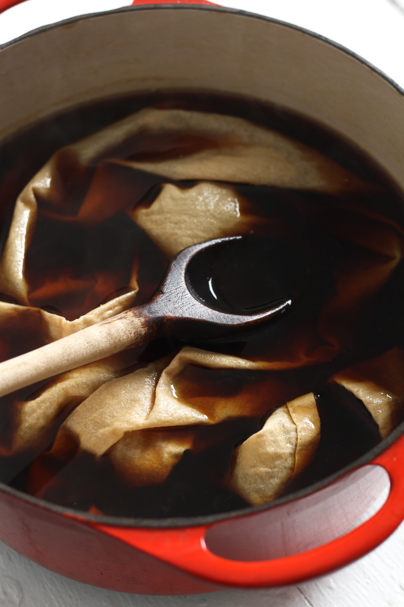
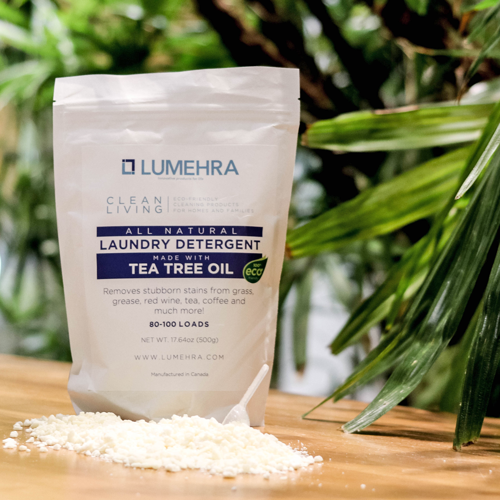

BYPRODUCTS
Tea waste possesses numerous properties that can be converted into a commercial asset. Waste is not always inert. The innovations take advantage of the chemical and molecular diversity of the tea bush and leaf. Waste retains polythenols, antioxidants, catechins, flavanols, cellulose, amino acids, nonsoluble proteins, caffeine, fiber, sugars, lignin, zinc, and tannic acid, which contribute to tea's flavor, texture, and nutritional value. Instead of burning or burying waste, it can be easily extracted, mixed, and shaped to create value.
Tea Tree Oil
Tea tree oil is an essential oil that can be used to keep your skin, hair, and nails healthy.
Tea tree oil is inexpensive and safe when used as directed, in addition to its scientifically proven benefits.
For centuries, the Aboriginal people of Australia have used tea tree oil as a traditional medicine. These indigenous Australians crush tea tree leaves to extract the oil, which they then inhale or apply directly to the skin to treat coughs and colds.
Tea tree oil is now widely available as an undiluted, or neat, oil. Diluted forms are also available, with strengths ranging from 5-50% in skin care products.
Terpinen-4-ol also appears to increase the activity of your white blood cells, which help fight germs and other foreign
invaders.These germ-fighting properties make tea tree oil a valued natural remedy for treating bacterial and fungal skin conditions, preventing infection, and promoting healing.
Tea tree oil is an excellent natural hand sanitizer. According to research, it kills several common bacteria and viruses that cause illness, including E. coli, S. pneumoniae, and H. influenzae.
In fact, a study of various handwashes found that adding tea tree oil to the cleansers increased their effectiveness against E. coli.
Studies continue to show that tea tree oil-based hand sanitizers are effective at killing bacteria without the use of antibiotics.
The antibacterial properties of tea tree oil may aid in the control of perspiration-related underarm odor. Sweat does not have an odor. However, when sweat gland secretions combine with bacteria on your skin, a moderate to strong odor is produced.
These glands are concentrated in your underarm area and are primarily responsible for what is commonly referred to as body odor. Because of its antibacterial properties, tea tree oil is an excellent natural alternative to commercial deodorants and antiperspirants.
Here's a natural deodorant that's both safe and effective, made with tea tree oil and a few other ingredients.
Infections of the nails caused by fungi are quite common. They are not dangerous, but they are unsightly. Nail fungus can be treated with medications, but some people prefer a more natural approach.
When used alone or in combination with other natural remedies, tea tree oil has been shown to help get rid of nail fungus with fewer side effects than traditional medications.
Dye
Fabric dyeing has most likely been practiced for millennia. Some historians believe that people first dyed fabric to hide stains or dirt. It is unknown how long tea dyeing has been practiced, but it could be almost as old as tea itself. Tea dyeing is a simple and cost-effective way for anyone to dye clothing or linens.
Tea dyeing is frequently used to give fabrics an aged or antique appearance. Many people enjoy dyeing material with tea because of the variety of colors and shades that can be achieved, as well as the tea bath tradition itself.
Tea baths can dye fabrics in a dizzying array of colors. Chamomile tea produces a bright yellow; green tea produces a light green; black teas produce tans, browns, and beige shades; and hibiscus tea produces an appealing pinkish lavender shade. In general, the darker the color of the tea, the stronger its aroma. Although the fabric will smell like tea after its tea bath, a single wash should remove any odor.
When tea dyeing, one of several mordants must be used to fix the color. Two common mordants are alum and cream of tartar. Before dyeing the fabric, make sure it's been washed in hot water to remove any bleach and shrinkage. Do not attempt to dye synthetic fabrics with tea because the dye will not adhere. When you begin the dyeing process, make sure the fabric is wet.
Detergent
Oolong tea extract has been developed as an effective substitute for (CFC) chlorofluorocarbon, which is used to wash away oil from chips in display coated liquid crystal displays. The benefits of using oolong tea extract as detergent include the fact that it is an organic material and thus environmentally friendly, and that waste water is easily disposed of. It is a safe detergent that is non-toxic and non-inflammable, and that the extract forms a high quality detergent for washing oily substances.
Bio-Manure

Tea oil cake and waste are used as fodder and bio-manure, respectively. Manure made from green tea waste and fowl droppings is sold in Japan's manure market and is widely used in kitchen gardens for flowers and vegetables.
TEA PORIUM
Ultimate tea experience


Copyright © Tea porium Sri Lanka.All rights reserved.